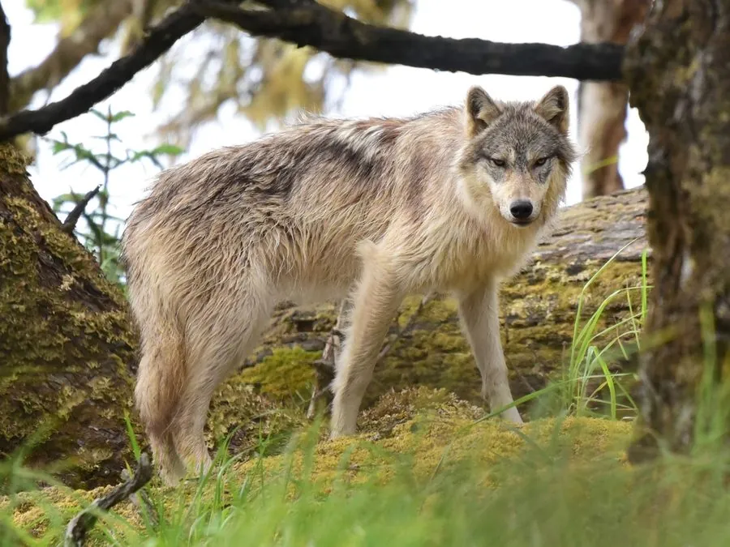

哺乳动物 · 动物界
狼 Canis lupus

犬科中体型最大的野生成员，以紧密协作的狼群狩猎，靠嚎叫与气味维系群体，曾广泛分布于北半球。
- 分类
- 门脊索动物门纲哺乳纲目食肉目科犬科属犬属
- 栖息环境
- 苔原、针叶林、草原到半荒漠的多种生境，适应力强
- 地理分布
- 欧亚大陆与北美洲，中国东北、西北、青藏高原等地有分布
- 保护级别
- IUCN 无危（LC）；中国国家二级保护动物
物种志
狼体长 1.0–1.6 米（含尾），肩高 60–90 cm，体重 30–60 kg，雄性略大。它的被毛多为灰、褐、黑或白色混合，颈部与尾部毛较厚，尾下垂，耳直立，吻部狭长，四肢修长善跑。
狼栖息于苔原、针叶林、草原和荒漠边缘，食谱包括麋鹿、狍、野兔、鸟类与各种浆果，常以群体协作围追堵截，短距离冲刺时速可达 60 km/h。狼群通常由一对繁殖狼及其后代组成，成员 3–15 只，通过嚎叫、面部表情和摇尾协调行动；一只狼的领地可达数百平方千米。历史上狼广布欧亚大陆与北美，因报复性猎杀在许多地区消失，如今受保护后有所恢复。
形态与习性
- 食性麋鹿、狍、野兔等，常群体协作捕猎
- 体长1.0–1.6 m（含尾），肩高 60–90 cm
- 体重30–60 kg，雄性大于雌性
- 寿命野外约 8–13 年
- 繁殖1–3 月发情，妊娠期约 63 天，每胎 4–7 仔
- 社会结构狼群由一对繁殖狼及后代组成，通常 3–15 只
- 活动节律多在黄昏、夜间和清晨活动
趣味知识
- 狼用嚎叫与同伴联络，声音可传到数千米之外。
- 狼群由一对繁殖狼带领，其余成员多为它们的后代。
- 短距离冲刺时速可达 60 km/h，但长距离追猎更依赖耐力。
- 狼的尾巴姿态能表达等级，尾巴高举的个体地位更高。